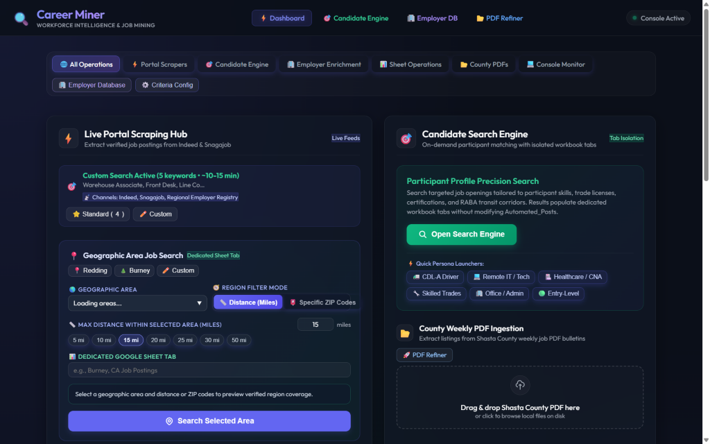

SYSTEM 01 • PYTHON & GEMINI AI
Workforce Intelligence
Career Miner
Real-Time Regional Job Database & AI Enrichment System

🔍 Click to Enlarge Screenshot
Initial Problem Solved
Created to automate collection of active local job listings for entry-level grant participants—eliminating 8+ hours/week of manual job-board hunting and expired links.
How It Expanded & Scales
Grew into a nearly real-time regional job database and AI enrichment console: scrapes Indeed, Snagajob, regional employers, and county PDFs; classifies across 18 sectors with Gemini AI; checks RABA bus routes via GTFS; and runs isolated personalized searches for skilled job seekers—scalable for regional workforce agencies.
18-Sector Gemini AI
RABA Bus GTFS
Skilled Persona Tabs
Employer DB & Expiry Audit
Operational Impact
80%–90% reduction in manual search labor; active vetted leads sync directly into WRTP-CMS.